🎬 My Movie Shelf
Tap any cover for a quick synopsis.
⭐ Top Favorites
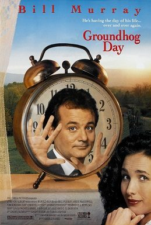
⭐Groundhog Day

⭐A grumpy TV weatherman covering the Groundhog Day festival in a small Pennsylvania town finds himself waking up to live the same day over and over again.
 ⭐Highlander
⭐Highlander
⭐A Scottish swordsman from the 1500s learns he is one of a few immortals who must battle each other through the centuries until only one remains.
⭐American Beauty
A suburban father in a midlife crisis quits his job, rebels against his dull routine, and becomes infatuated with his teenage daughter's friend as his family falls apart.
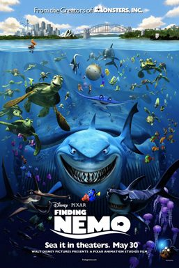
⭐Finding Nemo

⭐After his only son is scooped up by a diver, a nervous clownfish crosses the ocean with a forgetful blue tang named Dory to bring him home.
 ⭐Monsters, Inc.
⭐Monsters, Inc.
⭐Two monsters whose job is scaring children for power discover a little girl has slipped into their world, and must hide her while uncovering a plot at their company.
 ⭐Men in Black (1997)
⭐Men in Black (1997)
⭐A New York cop is recruited into a secret agency that polices aliens living on Earth, and partners with a veteran agent to stop an alien bug threatening the planet.
10/10⭐Notorious (1946)
The daughter of a convicted Nazi spy is recruited by a U.S. agent to infiltrate a Nazi group in Rio de Janeiro, and the two fall in love.
👍 Movies I Like
 9/10Fiddler on the Roof (1971)
9/10Fiddler on the Roof (1971)
9/10A poor Jewish milkman in a village in Tsarist Russia tries to hold onto tradition as his daughters choose their own husbands and the outside world closes in.
 7/10My Neighbor Totoro (1988)
7/10My Neighbor Totoro (1988)
7/10Two young sisters move to the Japanese countryside to be near their sick mother and befriend Totoro, a giant friendly forest spirit, and his magical Catbus.
 9/10The Absent-Minded Professor (1961)
9/10The Absent-Minded Professor (1961)
9/10A forgetful college professor invents a bouncy, gravity-defying substance he calls Flubber, which he uses to make a car fly and help his school's basketball team.
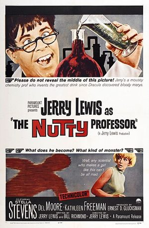
7/10The Nutty Professor (1963)

7/10A shy, clumsy chemistry professor invents a potion that turns him into Buddy Love, a smooth but obnoxious lounge singer, to win over a student he admires.
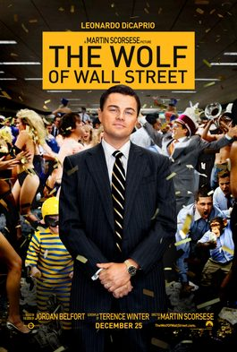
8/10The Wolf of Wall Street (2013)

8/10The true story of Jordan Belfort, a stockbroker who gets rich running a firm that cheats investors, living a wild life of excess while the FBI investigates.
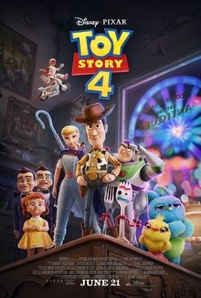
9/10Toy Story 4 (2019)

9/10Woody and the toys go on a road trip with Bonnie and Forky, a homemade toy made from a spork, and Woody reunites with his long-lost friend Bo Peep.
9/10The Big Short (2015)
The true story of a few outsiders and investors who predict the collapse of the U.S. housing market in the mid-2000s and bet against the big banks.
 10/10The King of Comedy (1982)
10/10The King of Comedy (1982)
10/10An aspiring stand-up comedian obsessed with a famous late-night talk show host will go to any length to get his big break on the show.
8/10Toy Story 5 (2026)
Two years after the last film, Jessie, Woody, Buzz and the other toys must deal with Lilypad, a talking tablet that has become Bonnie's new favorite plaything.
 Star Wars
Star Wars
A farm boy on a desert planet joins a Jedi knight, a smuggler, and two droids to rescue a rebel princess and fight the Empire's planet-destroying Death Star.
 The Matrix
The Matrix
A computer hacker discovers that the world he knows is a simulation built by machines, and joins a band of rebels fighting to free humanity.
 Blade Runner (1982)
Blade Runner (1982)
In a rainy future Los Angeles, a weary detective is assigned to hunt down four escaped human-like androids called replicants who are searching for their creator.
Blade Runner 2049
Thirty years after the first film, a replicant blade runner uncovers a long-buried secret that leads him to search for the missing former detective Rick Deckard.
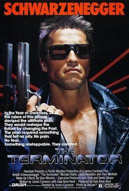
The Terminator

A cyborg assassin is sent back in time from a machine-ruled future to kill a young waitress whose unborn son will lead the human resistance.
 Terminator 2
Terminator 2
A reprogrammed Terminator is sent back to protect young John Connor and his mother from a more advanced, shape-shifting liquid-metal killer.
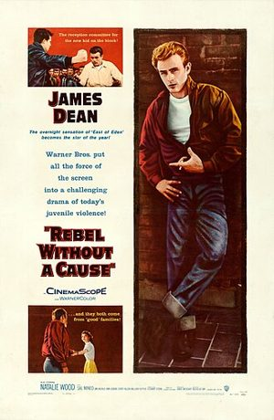
Rebel Without a Cause

A troubled teenager moves to a new town in 1950s Los Angeles, clashes with local kids and his own parents, and forms a bond with two other lonely teens.
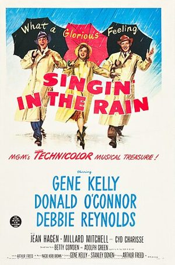
Singin' in the Rain

In late-1920s Hollywood, a silent-film star and his friends struggle to make the jump to talking pictures, helped by a talented young chorus girl.
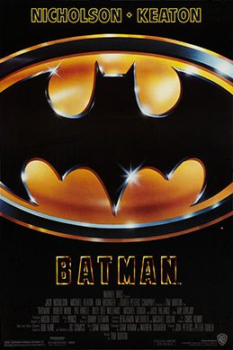
Batman (1989)

Billionaire Bruce Wayne fights crime in Gotham City as Batman, facing off against the Joker, a gangster turned grinning madman after a fall into a chemical vat.
 A Few Good Men
A Few Good Men
A cocky young Navy lawyer defends two Marines charged with killing a fellow Marine at Guantanamo Bay and begins to suspect orders came from the top.
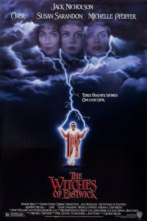
The Witches of Eastwick

Three single women in a small New England town unknowingly use magic to summon a charming, mysterious stranger who seduces each of them.
 One Flew Over the Cuckoo's Nest
One Flew Over the Cuckoo's Nest
A rowdy convict who gets himself sent to a mental hospital to avoid prison work stirs up the patients and clashes with the strict Nurse Ratched.
 As Good as It Gets
As Good as It Gets
A rude, obsessive-compulsive romance novelist is forced out of his routine when he looks after his neighbor's dog and grows attached to a waitress.
Pulp Fiction
The lives of two hitmen, a boxer, a gangster's wife, and a pair of diner robbers in Los Angeles intertwine in a series of darkly funny, violent stories.
The Godfather
The aging head of a powerful New York Mafia family tries to pass control to his reluctant youngest son Michael as a war breaks out between crime families.
 The Godfather Part II
The Godfather Part II
Michael Corleone expands and defends his crime empire in the 1950s, intercut with the story of his father Vito's rise from Sicilian immigrant to mob boss.
 Schindler's List
Schindler's List
The true story of German businessman Oskar Schindler, who saved more than a thousand Jewish workers during the Holocaust by employing them in his factories.
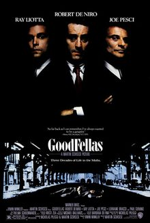
Goodfellas

Based on a true story, Henry Hill grows up idolizing gangsters and spends decades rising through the New York mob alongside his volatile friends.
 Taxi Driver
Taxi Driver
A lonely, unstable Vietnam veteran working as a night-shift cab driver in New York grows disgusted with the city's crime and becomes increasingly violent.
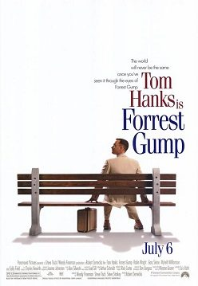
Forrest Gump

A kind-hearted Alabama man with a low IQ accidentally finds himself at the center of major moments in American history while loving his childhood friend Jenny.
 The Shawshank Redemption
The Shawshank Redemption
A banker sentenced to life in prison for murdering his wife forms a deep friendship with a fellow inmate over two decades at Shawshank prison.
 Jurassic Park
Jurassic Park
Scientists are invited to preview a theme park full of cloned dinosaurs on a remote island, but things go badly wrong when the security systems fail.
 E.T.
E.T.
A lonely boy in suburban California befriends a gentle alien stranded on Earth and, with his siblings, tries to help it get back home.
 Avatar (2009)
Avatar (2009)
A paralyzed ex-Marine uses a remote-controlled alien body to live among the Na'vi on the moon Pandora and becomes torn between them and the humans mining their land.
Titanic
A poor artist and a wealthy young woman engaged to a rich man fall in love aboard the ill-fated maiden voyage of the RMS Titanic in 1912.
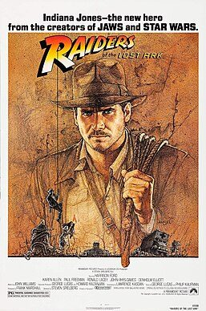
Raiders of the Lost Ark

In 1936, archaeologist Indiana Jones races the Nazis across the globe to find the legendary Ark of the Covenant before they can use its power.
Dune (2021)
Young Paul Atreides travels with his noble family to the dangerous desert planet Arrakis, the only source of the universe's most valuable substance, where betrayal awaits.
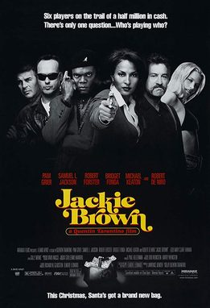
Jackie Brown

A flight attendant caught smuggling money for an arms dealer plays the cops and the criminals against each other in a scheme to keep half a million dollars.
 Fight Club
Fight Club
An insomniac office worker and a charismatic soap salesman start an underground fight club that grows into something much bigger and more dangerous.
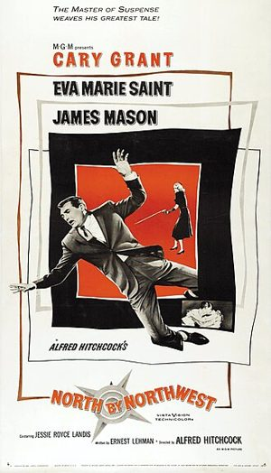
North by Northwest

A New York advertising man is mistaken for a government agent and chased across the country by spies, from a crop-duster attack to Mount Rushmore.
Coco
A Mexican boy who dreams of being a musician despite his family's ban on music ends up in the colorful Land of the Dead on the Day of the Dead.
 Toy Story (1995)
Toy Story (1995)
Woody, a cowboy doll and a boy's favorite toy, feels threatened when a flashy new space-ranger action figure, Buzz Lightyear, arrives in the bedroom.
 The Silence of the Lambs
The Silence of the Lambs
A young FBI trainee seeks help from the brilliant, imprisoned cannibal psychiatrist Hannibal Lecter to catch a serial killer who is still at large.
 Back to the Future
Back to the Future
Teenager Marty McFly is accidentally sent back to 1955 in a time-traveling DeLorean and must make sure his parents fall in love so he will exist.
Spirited Away
A ten-year-old girl wanders into a world of spirits, where she must work in a magical bathhouse to free herself and save her parents, who have been turned into pigs.
Kill Bill (Vol. 1 & 2)
A former assassin known as the Bride wakes from a four-year coma and hunts down the gang, and their boss Bill, who attacked her at her wedding rehearsal.
 The Lion King (1994)
The Lion King (1994)
A young lion prince flees his kingdom after his father's death, which his scheming uncle blames on him, and must one day return to claim his place.
 American History X
American History X
A former neo-Nazi leaving prison tries to stop his younger brother from following the same hateful path he once led.
 The Fifth Element
The Fifth Element
A New York cab driver in the 23rd century is swept into a mission to save Earth from a great evil when a mysterious woman falls into his cab.
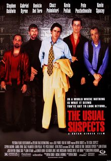
The Usual Suspects

A small-time con man tells police how five criminals met in a lineup and were drawn into a deadly job for a legendary, mysterious crime boss named Keyser Söze.
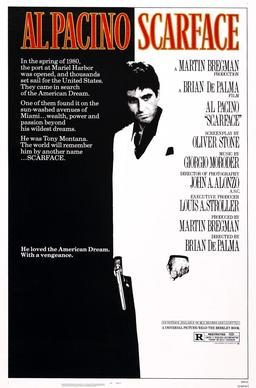
Scarface (1983)

A Cuban refugee arrives in Miami in 1980 and ruthlessly rises to become a powerful cocaine kingpin, growing more paranoid as his empire expands.
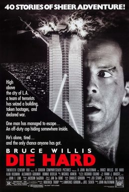
Die Hard

An off-duty New York cop visiting his estranged wife in Los Angeles is trapped in a skyscraper when terrorists take everyone at her office Christmas party hostage.
The Truman Show
An insurance salesman slowly realizes his entire life has been a 24-hour reality TV show filmed inside a giant set, watched by millions.
Metropolis (1927)
In a towering futuristic city where the rich live above and workers toil below, the son of the city's ruler falls for a woman who preaches hope to the workers.
 The Sixth Sense
The Sixth Sense
A child psychologist tries to help a frightened young boy who confides a terrifying secret: he sees dead people.
Top Gun (1986)
A hotshot young Navy pilot nicknamed Maverick trains at an elite fighter-pilot school, competing with rivals and falling for an instructor.
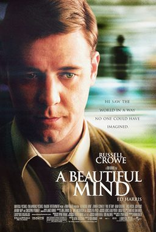
A Beautiful Mind

The story of brilliant mathematician John Nash, whose groundbreaking work at Princeton is threatened by his struggle with schizophrenia.
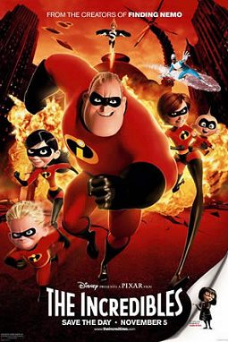
The Incredibles

A family of superheroes forced to live ordinary suburban lives jumps back into action when the father is lured into a mysterious mission.
 Edge of Tomorrow
Edge of Tomorrow
An inexperienced officer thrown into battle against alien invaders gets caught in a time loop, reliving the same day of combat each time he dies.
 Up
Up
A grumpy old widower ties thousands of balloons to his house to fly to South America, only to find a young Wilderness Explorer has come along by accident.
Ratatouille
A rat in Paris who dreams of being a chef teams up with a clumsy kitchen worker at a famous restaurant, secretly cooking by steering him from under his hat.
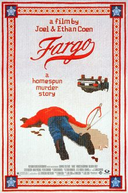
Fargo

A desperate Minnesota car salesman hires two criminals to kidnap his wife for ransom, and a pregnant small-town police chief starts investigating the crimes that follow.
 Gattaca
Gattaca
In a future where people are judged by their DNA, a man born naturally with flaws borrows a genetically superior man's identity to chase his dream of space travel.
KPop Demon Hunters (2025)
A famous K-pop girl group, Huntr/x, secretly uses their voices to protect the world from demons and must face a rival boy band of demons in disguise.
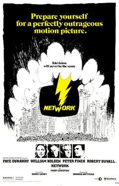
Network (1976)

When a veteran TV news anchor has an on-air breakdown and his ratings soar, a ruthless network turns his angry rants into a hit show.
Catch Me If You Can (2002)
Based on a true story, a teenage con man poses as a pilot, doctor, and lawyer while cashing millions in forged checks, chased by a determined FBI agent.
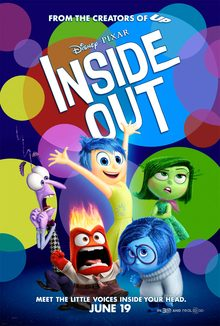
Inside Out (2015)

Inside the mind of an 11-year-old girl who has just moved to San Francisco, her emotions Joy, Sadness, Anger, Fear, and Disgust struggle to guide her.
📺 TV Shows
10/10Andor (2022–2025)
Years before the events of Rogue One, a thief named Cassian Andor is drawn into the growing rebellion against the Empire and becomes a committed rebel.
👀 Seen
 Eternal Sunshine of the Spotless Mind
Eternal Sunshine of the Spotless Mind
After a painful breakup, a shy man learns his ex-girlfriend has had him erased from her memory, so he undergoes the same procedure.
The Prestige
Two rival stage magicians in Victorian London become obsessed with outdoing each other, each trying to steal the secret of the other's greatest trick.
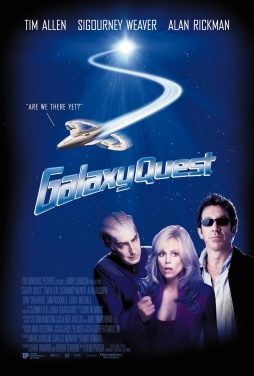
Galaxy Quest

The washed-up cast of a cancelled sci-fi TV show is mistaken for real space heroes by aliens who need their help in an actual intergalactic war.
 Lethal Weapon
Lethal Weapon
A steady family-man detective in Los Angeles is partnered with a reckless, grieving cop, and the two take on a gang of drug smugglers.
👎 Not For Me
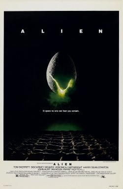
Alien

The crew of a commercial spaceship answers a distress signal on a distant planet and brings aboard a deadly creature that hunts them one by one.
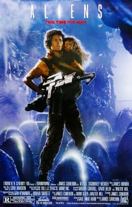
Aliens

Ellen Ripley returns to the planet where her crew found the alien creature, this time with a squad of Marines, after contact is lost with a colony there.
The Abyss
A crew working on an underwater oil rig is enlisted to help search for a lost nuclear submarine and encounters something strange in the ocean depths.
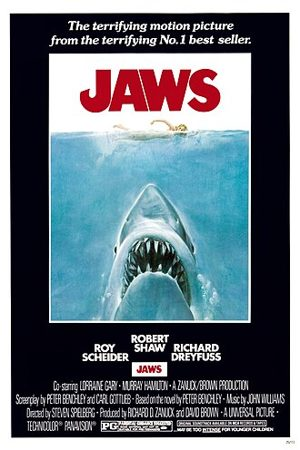
Jaws

A police chief in a summer beach town teams up with a marine scientist and a grizzled fisherman to hunt down a giant great white shark attacking swimmers.
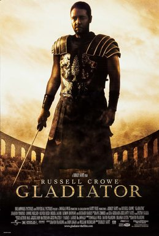
Gladiator

A loyal Roman general is betrayed by the emperor's son, sold into slavery, and fights his way up as a gladiator to seek revenge.
 Arrival
Arrival
A linguist is recruited by the U.S. Army to communicate with mysterious aliens after twelve spacecraft land around the world.
 Interstellar
Interstellar
With Earth dying from crop failures, a former pilot leaves his family to lead a mission through a wormhole in search of a new home for humanity.
 The Dark Knight
The Dark Knight
Batman teams up with Lieutenant Gordon and District Attorney Harvey Dent to take down Gotham's mob, but the chaotic Joker pushes them all to the edge.
 Inglourious Basterds
Inglourious Basterds
In Nazi-occupied France, a squad of Jewish-American soldiers and a young Jewish cinema owner separately plot to take down the Nazi leadership.
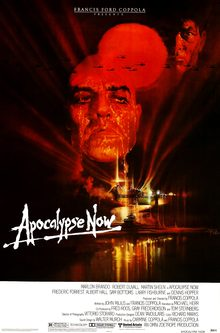
Apocalypse Now

During the Vietnam War, an Army captain is sent up a river into Cambodia on a secret mission to kill a renegade colonel who has gone rogue.
 The Princess Bride
The Princess Bride
A grandfather reads his sick grandson a tale of a farmhand turned hero who battles pirates, giants, and a scheming prince to rescue his true love.
 Se7en
Se7en
Two detectives, one about to retire and one newly arrived, hunt a serial killer who stages his murders around the seven deadly sins.
Psycho
A secretary who steals money from her employer and goes on the run checks into a remote motel run by a shy young man and his mother.
 Vertigo
Vertigo
A retired San Francisco detective with a fear of heights is hired to follow an old friend's wife and becomes dangerously obsessed with her.
 The Lord of the Rings (all)
The Lord of the Rings (all)
A humble hobbit and a fellowship of companions set out across Middle-earth to destroy a powerful ring before the Dark Lord Sauron can reclaim it.
Harry Potter movies (books are great)
An orphaned boy discovers on his eleventh birthday that he is a wizard and goes to Hogwarts, where he learns about the dark wizard who killed his parents.
 Mean Streets
Mean Streets
A small-time hood in New York's Little Italy tries to move up in the mob while looking after his reckless friend, who owes money all over town.
🍿 Want to Watch
Tap a cover for the story, caveman version and scores.
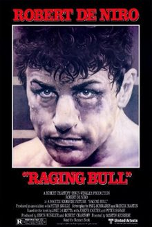
Raging Bull (1980)

The true story of middleweight boxer Jake LaMotta, whose jealousy and violent temper fuel his success in the ring but wreck his relationships outside it.
Angry boxer man punch hard. Win fights. Lose temper. Hurt wife, hurt brother. Black and white. De Niro get fat.
Critics love (92%). Crowd love (93%).🤔 Maybe
Tap a cover for the story, caveman version and scores.
 Sicario (2015)
Sicario (2015)
An idealistic FBI agent joins a secretive government task force fighting a Mexican drug cartel near the U.S. border and finds the rules don't apply.
Good lady cop join secret team. Go to border. Drug war ugly. Rules break. Quiet man scary. Who trust?
Critics love (91%). Crowd like (85%).Reservoir Dogs (1992)
After a diamond heist goes badly wrong, the surviving robbers regroup at a warehouse and start to suspect that one of them is a police informant.
Men in black suits rob jewels. Robbery go bad. Hide in warehouse. Blood everywhere. Who rat? Talk lots.
Critics love (90%). Crowd love (94%). Stand by Me (1986)
Stand by Me (1986)
In 1959 Oregon, four boys set off on a two-day hike along the railroad tracks to find the body of a missing kid.
Four boy friends walk train tracks. Look for lost body. Leeches. Big bullies. Summer friendship. Grow up.
Critics like (89%). Crowd love (94%). Amadeus (1984)
Amadeus (1984)
Aging composer Antonio Salieri recalls his bitter jealousy of the young, crude, and wildly gifted Wolfgang Amadeus Mozart in 18th-century Vienna.
Old music man jealous. Young Mozart silly giggle man but genius. Old man hate. God unfair. Pretty music.
Critics love (90%). Crowd love (95%).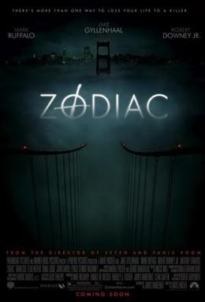
Zodiac (2007)

A newspaper cartoonist, a reporter, and police detectives become obsessed over many years with identifying the Zodiac killer terrorizing San Francisco.
Killer send puzzle letters. Cartoon man obsessed. Cops and reporter chase years. Clues pile up. No sleep.
Critics love (90%). Crowd like (78%). Rear Window (1954)
Rear Window (1954)
A photographer stuck in his apartment with a broken leg spies on his neighbors through the window and becomes convinced one of them committed murder.
Man break leg. Stuck in chair. Watch neighbors through window. See something bad? Girlfriend help snoop.
Critics love (99%). Crowd love (95%). Rope (1948)
Rope (1948)
Two young men kill a former classmate to prove their intellectual superiority, then host a dinner party with the body hidden in the room.
Two rich boys do bad thing. Throw fancy party. Hide secret in room. Smart teacher come. Tension big.
Critics love (93%). Crowd love (90%).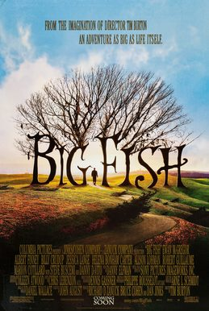
Big Fish (2003)

A son tries to learn the truth about his dying father, a man famous for telling tall tales about his larger-than-life adventures.
Old dad tell tall tales. Giant man, witch eye, big fish. Son not believe. Son try find true dad.
Critics like (76%). Crowd like (89%).Memento (2000)
A man who cannot form new memories uses notes, Polaroids, and tattoos to hunt for his wife's killer, with the story told in reverse order.
Man no make new memory. Write notes, tattoo body. Hunt wife killer. Story go backward. Who trust? Brain twist.
Critics love (94%). Crowd love (94%).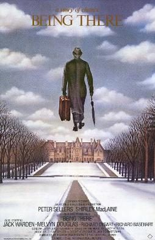
Being There (1979)

A simple gardener who has spent his whole life inside a house watching TV is forced out into the world, where powerful people mistake his plain words for wisdom.
Simple gardener man know only TV and plants. Leave house first time. Rich people think he genius. Talk garden, they hear wisdom. Go all the way to the president.
Critics love (95%). Crowd love (92%).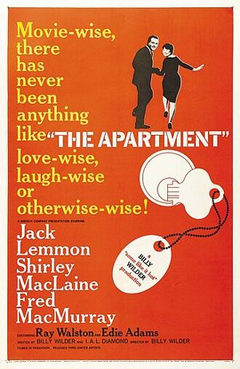
The Apartment (1960)

A lonely insurance clerk lends his apartment to company executives for their affairs to climb the ladder, and falls for the elevator operator at work.
Office man lend apartment to bosses for secret dates. Hope get promoted. Fall for elevator girl, but big boss date her too. Heart hurt.
Critics love (94%). Crowd love (94%).Moneyball (2011)
The true story of Oakland A's general manager Billy Beane, who uses statistics to build a competitive baseball team on a tiny budget.
Baseball boss have no money. Nerd man use numbers to pick cheap players. Old scouts laugh. Team start win.
Critics love (94%). Crowd like (86%).